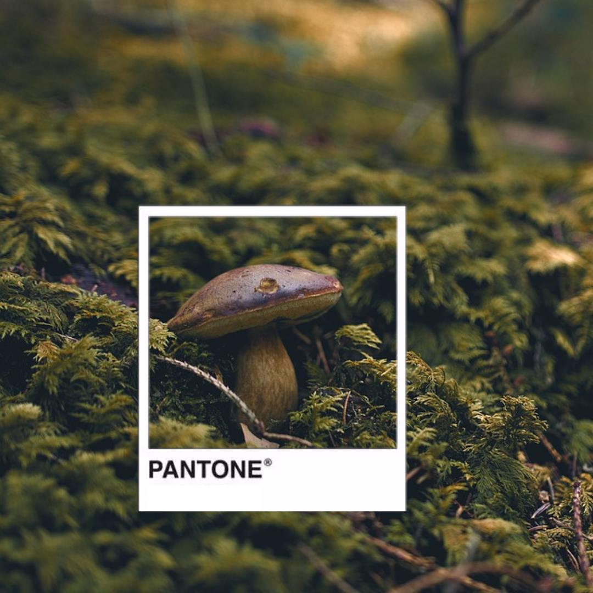

Hojas
Cada imagen contiene ciertos colores de pantone, como este caso tiene 4 y son los siguientes: #e88711, #facf4d,#902108 y #4b0f09.

Nos encontramos en otoño y por eso queremos dedicar esta sección en imágenes de esta estación que nos regala sus colores!
Cada imagen contiene ciertos colores de pantone, como este caso tiene 4 y son los siguientes: #e88711, #facf4d,#902108 y #4b0f09.
En esta fotografia hay 8 tonalidades de pantone, verdes, marrones, negro y gris: #d5b251, #3c240c,#966123, #a0a83a, #6e3f15, #0e0b07,#706c36 y #535054
La naturalesa con un factor humano. Esta imagen contiene los siguientes pantones: #33271b, #d7a46b, #895324, #96a9a4 y #5e6e4a.
Cada estación del año tiene sus características, sus componentes y cada uno de ellos tiene sus pantones: #664724, #e5ae4d, #1f1304, #ac8d65 y #a3713d;
Temporada de setas, es en otoño. Encontramos gran variedad, cada una con sus colores, esta esta compuesta por estes pantones: #3d3e2c ,#c6ab86, #827247 y #99979c.
Una paleta sólida para otoño/invierno 2020/2021 que fusiona nuestro deseo de un color trascendente con el optimismo de la determinación y la fortaleza. Mandarin Red es un tono rojo impregnado de naranja, amplificado y provocador, que se convierte en una fuerza dinámica. Samba es un rojo sensual y voluptuoso que transmite optimismo y energía. True Blue es un tono azul definitivo y fiable que se caracteriza por su constancia y su fidelidad. Exuberance es un color naranja desenfadado y comunicativo que traslada un mensaje de espontaneidad y felicidad. Military Olive es un tono verdoso, fuerte e inquebrantable, con una narrativa suntuosa.